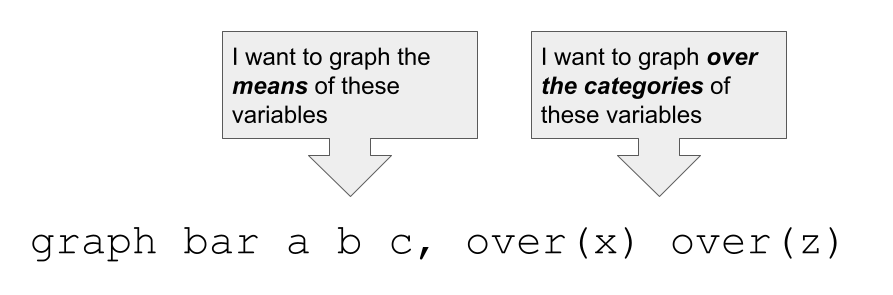
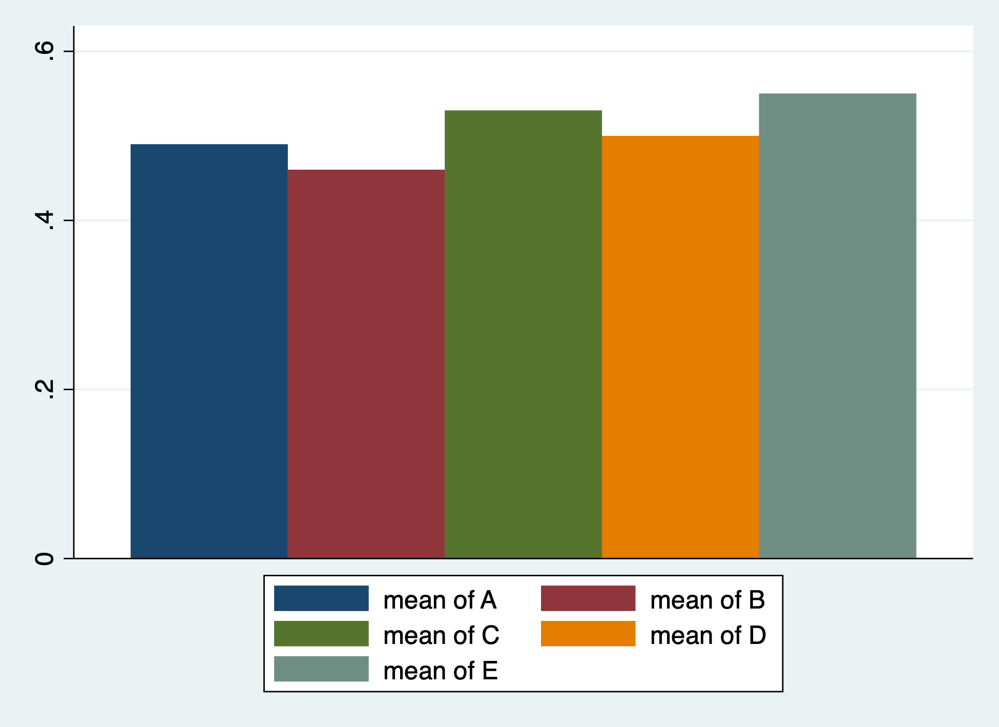
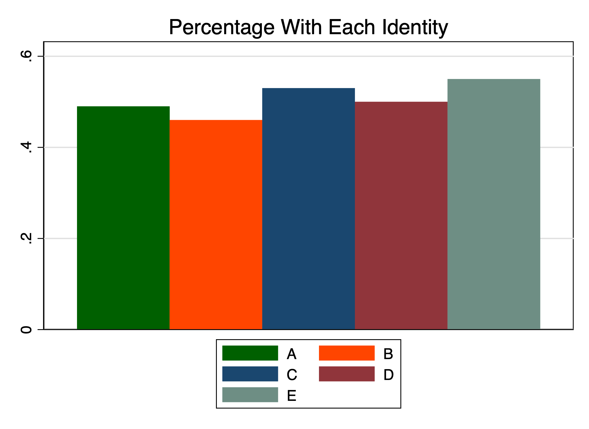

Multiple Identities
Evolving Thoughts on Visualizing and Analyzing Data on Multiple Identities
1 Introduction
Increasingly, we are presented with data in which respondents report multiple identities, whether these be gender identities, racial identies, ethnic identities, or religious identities.
In our training, we may be familiar with thinking about visualizing, or analyzing, data when respondents report a single identity, but less sure of how to present information when respondents report multiple identities.
In this evolving set of notes I hope to think through these issues. Currently, the notes center around the use of Stata, but I hope to think through these issues in R as well.
2 Simulated Data
In this example, I use simulated data on a set of simulated identities, A, B, C, D, and E.
It turns out to be useful that in this data, the identities are coded as 1/0. 1 indicates that the respondent reports that identity, while 0 indicates that the respondent does not report that identity.
A sample of the data is listed below.
| id | A | B | C | D | E |
|---|---|---|---|---|---|
| 1 | 1 | 1 | 1 | 1 | 1 |
| 2 | 0 | 1 | 1 | 1 | 1 |
| 3 | 1 | 1 | 0 | 0 | 1 |
| 4 | 1 | 0 | 0 | 1 | 0 |
| 5 | 0 | 0 | 0 | 0 | 1 |
| 6 | 1 | 0 | 1 | 0 | 1 |
3 Graphing
We make use of a useful statistical trick. The mean of a dichotomous variable, e.g. the mean of A, is the proportion of individuals with identity A.
In Stata, graph bar, lets us graph the means of variables, the categories of variables, or the means of variables over the categories of other variables.

So, we use the following command:
graph bar A B C D E 
We can add some options to our graph command.
graph bar A B C D E, ///
title("Percentage With Each Identity") ///
legend(order(1 "A" 2 "B" 3 "C" 4 "D" 5 "E")) ///
scheme(s1color)
4 Statistical Analysis
TBD
5 More Complex Thinking About Patterns of Multiple Identities
We can start to think about the patterns of multiple identities.
The Stata command egen (extensions to generate), will allow us to create a variable that contains the patterns of different identities.
Visualizing these patterns will take some thinking …
egen pattern = group(A B C D E), label
tabulate pattern
tabulate pattern
group(A B C |
D E) | Freq. Percent Cum.
------------+-----------------------------------
0 0 0 0 0 | 1 1.00 1.00
0 0 0 0 1 | 3 3.00 4.00
0 0 0 1 0 | 4 4.00 8.00
0 0 0 1 1 | 4 4.00 12.00
0 0 1 0 0 | 4 4.00 16.00
0 0 1 0 1 | 3 3.00 19.00
0 0 1 1 0 | 3 3.00 22.00
0 0 1 1 1 | 3 3.00 25.00
0 1 0 0 0 | 2 2.00 27.00
0 1 0 0 1 | 2 2.00 29.00
0 1 0 1 0 | 6 6.00 35.00
0 1 0 1 1 | 1 1.00 36.00
0 1 1 0 0 | 3 3.00 39.00
0 1 1 0 1 | 5 5.00 44.00
0 1 1 1 0 | 2 2.00 46.00
0 1 1 1 1 | 5 5.00 51.00
1 0 0 0 0 | 4 4.00 55.00
1 0 0 0 1 | 5 5.00 60.00
1 0 0 1 0 | 2 2.00 62.00
1 0 0 1 1 | 1 1.00 63.00
1 0 1 0 0 | 4 4.00 67.00
1 0 1 0 1 | 4 4.00 71.00
1 0 1 1 0 | 4 4.00 75.00
1 0 1 1 1 | 5 5.00 80.00
1 1 0 0 0 | 3 3.00 83.00
1 1 0 0 1 | 3 3.00 86.00
1 1 0 1 0 | 1 1.00 87.00
1 1 0 1 1 | 5 5.00 92.00
1 1 1 0 1 | 4 4.00 96.00
1 1 1 1 0 | 2 2.00 98.00
1 1 1 1 1 | 2 2.00 100.00
------------+-----------------------------------
Total | 100 100.00